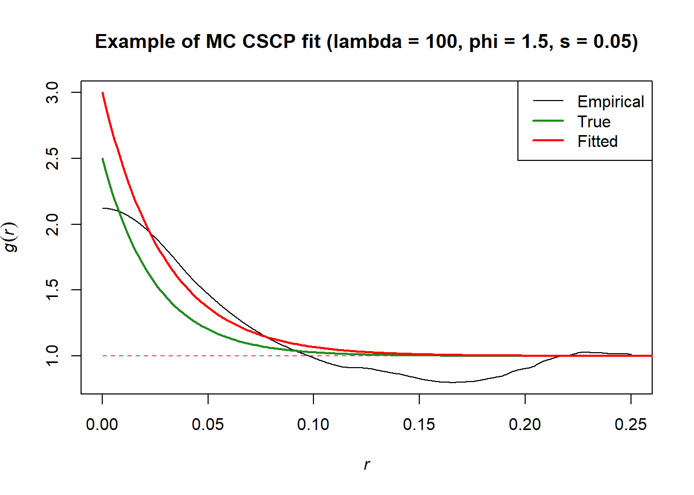
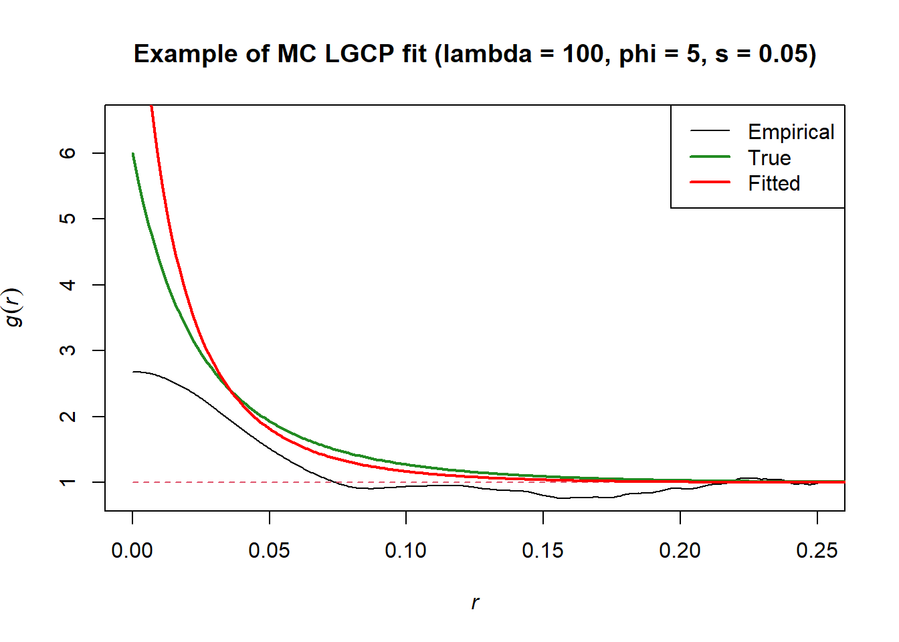
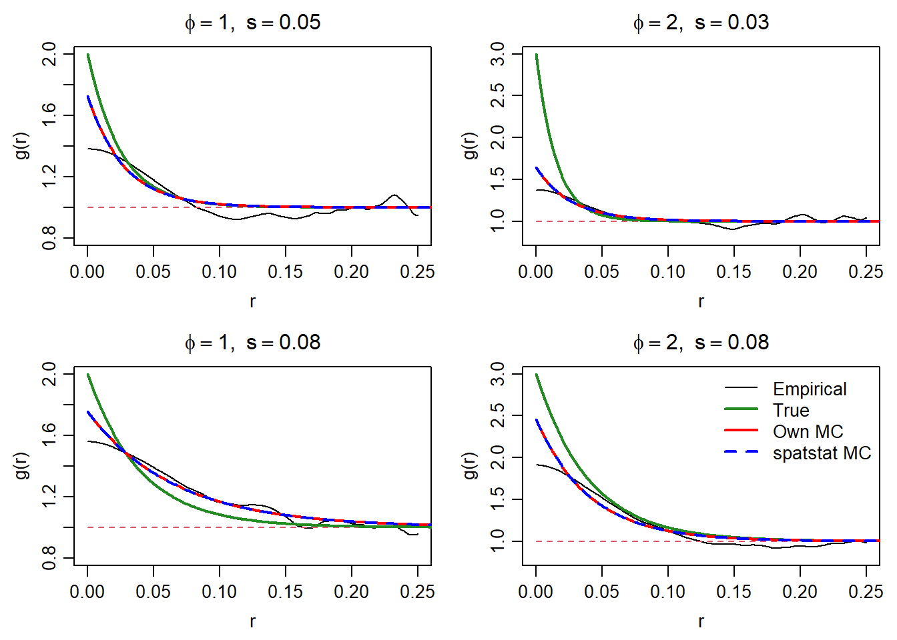

I’ve implemented my own minimum contrast. You can find the code here
48.1 Examples
Fitting a CSCP minimum contrast model:
Code
set.seed(1)# Simulating a point pattern realization from a CSCP on window [0,1]x[0,1] cscp_pp <-sim_cscp(lambda =100, phi =1.5, s =0.05)$pp# Fitting a MC modelcscp_fit <-fit_cscp_mc(cscp_pp, bw =0.02)# Comparing the model fit to the true PCFr_vals <-seq(0, 2.5, by =0.001)fitted_pcf_vals <-pcf_cscp_theoretical(r_vals, lambda = cscp_fit$par[["lambda"]], phi = cscp_fit$par[["phi"]], s = cscp_fit$par[["s"]])theoretical_pcf_vals <-pcf_cscp_theoretical(r_vals, lambda =100, phi =1.5, s =0.05)plot(pcf(cscp_pp, correction ="isotropic", divisor ="a",zerocor ="JonesFoster", bw =0.02), ylim =c(0.8, 3), legend = F, main ="Example of MC CSCP fit (lambda = 100, phi = 1.5, s = 0.05)")lines(r_vals, theoretical_pcf_vals, col ="forestgreen", lwd =2)lines(r_vals, fitted_pcf_vals, col ="red", lwd =2)legend("topright", legend =c("Empirical", "True", "Fitted"), col =c("black", "forestgreen", "red"), lwd =c(1, 2, 2))

Fitting an LGCP minimum contrast model:
Code
set.seed(1)# Simulating a point pattern realization from a CSCP on window [0,1]x[0,1] lgcp_pp <-sim_lgcp(lambda =100, phi =5, s =0.05)$pp# Fitting a MC model# Notice we have used a smaller bandwidth for this fitlgcp_fit <-fit_lgcp_mc(lgcp_pp, bw =0.01)# Comparing the model fit to the true PCFr_vals <-seq(0, 1, by =0.001)fitted_pcf_vals <-pcf_lgcp_theoretical(r_vals, lambda = lgcp_fit$par[["lambda"]], phi = lgcp_fit$par[["phi"]], s = lgcp_fit$par[["s"]])theoretical_pcf_vals <-pcf_lgcp_theoretical(r_vals, lambda =100, phi =5, s =0.05)plot(pcf(cscp_pp, correction ="isotropic", divisor ="a",zerocor ="JonesFoster", bw =0.01), ylim =c(0.8, 6.5), legend = F, main ="Example of MC LGCP fit (lambda = 100, phi = 5, s = 0.05)")lines(r_vals, theoretical_pcf_vals, col ="forestgreen", lwd =2)lines(r_vals, fitted_pcf_vals, col ="red", lwd =2)legend("topright", legend =c("Empirical", "True", "Fitted"), col =c("black", "forestgreen", "red"), lwd =c(1, 2, 2))

48.2 Implementation notes
Firstly, spatstat already provides a very useful mincontrast() function, and it is probably faster and more reliable than my implementation, but if I didn’t do this I would never bother to understand what is happening under the hood. I would eventually like to implement the non-parameteric PCF estimators as well.
I will comment on the CSCP implementation below, the LGCP is almost the same. I’ve left the in-line documentation out here, see the source file linked above if you prefer reading that, or use ?fit_cscp_mc after loading the library.
where \(\hat{g}(r_i)\) is the empirical PCF, \(g(r_i; \theta)\) is the theoretical PCF under the model, and \(k\) and \(p\) are tuning constants.
Reparameterization from \(\phi\) to \(\eta\)
In the case of the CSCP, the parameter space of \(\phi\) is \([0, 2]\), and of \(s\) is \([0, \infty)\).
To enforce \(\phi \in [0, 2]\), we optimize over \(\eta\), where \(\phi = 2\cdot \text{plogis}(\eta)\).
To enforce \(s \in [0, \infty)\), we optimize over \(\log(s)\).
Default values
I chose the following as default values, with my justification being they either produced fairly decent fits in my limited experience, or because they were suggested by my GOATs (supervisors).
Argument
Default
Role
bw
0.2
Bandwidth for empirical PCF estimation
correction
"isotropic"
Edge correction used in pcf()
divisor
"a"
Denominator choice for pcf()
zerocor
"JonesFoster"
Correction near the origin
r_min
0.02
Lower cutoff for fitting range
r_max
NULL
Upper cutoff for fitting range
k
0.25
Power transform in minimum contrast
p
2
Loss power
start$phi
0.5
Starting value for clustering strength
start$s
0.05
Starting value for range/scale
I also understand the argument for using whatever spatstat uses as its defaults.
Criticsms
It’s a pain in the ass to plot the fitted vs empirical right now. Would be nice to be able to streamline this.
Also, The way I have it setup right now is not very flexible if we want to consider different models in the future. In particular, a better design pattern might have been to have users pass there own objective function, rather than the way I have mc_pcf_objective() used internally (spatstat has the users pass it to mincontrast()).
I also think spatstat fits minimum contrast by using the K-function by default? Maybe this would be better.
I don’t really know the theory behind the \(k\) and \(p\) tuning parameters.
48.3 Comparison to spatstat implementation

THANK frick they are (almost) identical. I can rest in peace.
48.4 Todo
Add inline & roxygen comments.
I hate how annoying it is to plot the fitted PCF vs observed. Will be implementing a class + summary / plotting methods.
It would be nice if we could calculate the empirical PCF using spatstat’s PCF function, and then just pass that PCF object to the minimum contrast fitting function we have. Makes comparing different fits easier, and feels more reliable.
I have no idea above uncertainty quantification for MC fitting. Will look into this.
I believe the reparameterization of \(\phi\) to \(\eta\) does not allow estimates of \(\phi \in \{0, 1\}\). Is this a problem?